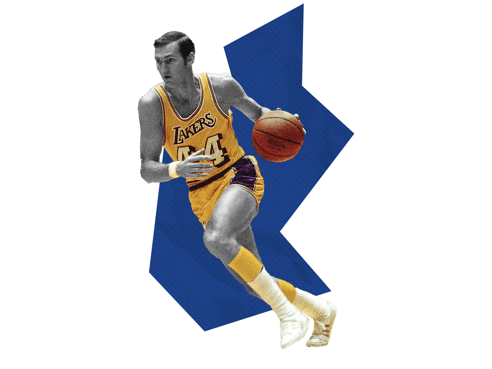

10. Jason Kidd |
|
Accolades
- 1 Championship (2011)
- 10 Time All-Star
- 6 Time All-NBA
- ROTY (1994-1995)
- 9 All Defensive Selections
- HOF
Teams
- Dallas Mavericks (1994-96), (2008-2012)
- Phoenix Suns(1996-2001)
- New Jersey Nets (2001-08)
- New York Knicks (2012-2013)
Stats
- 12.6 PPG
- 6.3 RPG
- 8.7 APG
- 1.9 SPG
|
9. Bob Cousy |
|
Accolades
- 6 Championships (1957, 1959, 1960, 1961, 1962, 1963)
- 1 MVP (1956-1957)
- 13 Time All-Star
- 12 Time All-NBA
- 2 Time All-Star MVP
- 8 Assist Titles
- NBA Top 75 All Time
- HOF
Teams
- Boston Celtics (1950-1963)
- Cincinnati Royals(1969-1970)
Stats
|
8. Steve Nash |
|
Accolades
- Championships None
- 2 MVPs (2005,2006)
- 8 Time All-Star
- 7 Time All-NBA
- 5 Assist Titles
- 4th All-Time Assists
- NBA Top 75 All Time
- HOF
Teams
- Phoenix Suns (1996-1998), (2004-2012)
- Dallas Mavericks (1998-2004))
- Los Angeles Lakers (2012-2014)
Stats
- 14.3 PPG
- 3 RPG
- 8.5 APG
- 0.7 SPG
- 0.1 BPG
|
7. John Stockton |
|
Accolades
- Championships None
- MVPs None
- 10 Time All-Star
- 11 Time All-NBA
- 1 All-Star MVP
- 9 Assist Titles
- 5x All-Defensive
- 2 Steal Titles
- All-Time Leader In Steals
- All-Time Leader In Assists
- NBA Top 75 All Time
- HOF
Teams
Stats
- 13.1 PPG
- 2.7 RPG
- 10.5 APG
- 2.2 SPG
- 0.2 BPG
|
6. Chris Paul |
|
Accolades
- Championships None
- MVPs None
- 12 Time All-Star
- 10 Time All-NBA
- 1 Time All-Star MVP
- 4 Assist Titles
- 9x All-Defensive
- 6 Steal Titles
- 3rd All-Time Assists
- 5th All-Time Steals
- ROTY (2005-06)
- NBA Top 75 All Time
Teams
- New Orleans/Oklahoma City Hornets (2005-2011)
- Los Angeles Clippers (2011-2017)
- Houston Rockets (2017-2019)
- Oklahoma City Thunder (2019-2020)
- Phoenix Suns (2020-Present)
Stats
- 18.1 PPG
- 4.5 RPG
- 9.5 APG
- 2.1 SPG
- 0.1 BPG
|
5. Isiah Thomas |
|
Accolades
- 2 Championships (1989-1990)
- MVPs None
- 12 Time All-Star
- 5 Time All-NBA
- 2 Time All-Star MVP
- 1 Assist Titles
- 1 Finals MVP (1990)
- 9th All-Time Assists
- NBA Top 75 All Time
- HOF
Teams
- Detroit Pistons (1981 -1994)
Stats
- 19.2 PPG
- 3.6 RPG
- 9.3 APG
- 1.9 SPG
- 0.3 BPG
|
4. Stephen Curry |
 |
Accolades
- 3 Championships (2015, 2017-2018)
- 2 MVPs (2015-2016)
- 8 Time All-Star
- 7 Time All-NBA
- 1 Time All-Star MVP
- 2 Scoring Titles
- 1 Time Steal Title
- 1st In All-Time 3's
- 1989-1990 Finals Mvp
- NBA Top 75 All Time
Teams
- Golden State Warriors (2009-Present)
Stats
- 24.3 PPG
- 4.6 RPG
- 6.5 APG
- 1.7 SPG
- 0.2 BPG
|
3. Jerry West |
|  |
Accolades
- 1 Championships (1972)
- 0 MVPs
- 14 Time All-Star
- 12 Time All-NBA
- 1 Time All-Star MVP
- 1 Scoring Titles
- 1 Assist Titles
- 5 Time All Defensive
- 1968-1969 Finals Mvp
- NBA Top 75 All Time
- HOF
Teams
- Los Angeles Lakers (1960-1974)
Stats
- 27 PPG
- 5.8 RPG
- 6.7 APG
- 2.6 SPG
- 0.7 BPG
|
2. Oscar Robertson |
|
Accolades
- 1 Championships (1971)
- 1 MVPs (1963-1964)
- 12 Time All-Star
- 11 Time All-NBA
- 3 Time All-Star MVP
- ROTY (1960-61)
- 6 Assist Titles
- 7th All-Time Assists
- NBA Top 75 All Time
- HOF
Teams
- Cincinatti Royals (1960-1970)
- Milwaukee Bucks (1970-1974)
Stats
- 25.7 PPG
- 7.5 RPG
- 9.5 APG
- 1.1 SPG
- 0.1 BPG
- AVG Triple Double (1963)
|
1. Magic Johnson |
 |
Accolades
- 5 Championships (1980, 1982, 1985, 1987-88)
- 3 MVPs (1987, 1989-90)
- 3 Final MVPs (1980, 1982, 1987)
- 12 Time All-Star
- 2 Time All-Star MVP
- 10 Time All-NBA
- 2 Steal Titles
- 4 Assist Titles
- 6th All-Time Assists
- NBA Top 75 All Time
- HOF
Teams
- Los Angeles Lakers (1979-1991,1995)
Stats
- 19.5 PPG
- 7.2 RPG
- 11.2 APG
- 1.9 SPG
- 0.4 BPG
|